In this tutorial, you will learn how to install Kaspersky in Centos Server and connect to Kaspersky Server. Kaspersky Server is installed in 10.13.212.50.
Note : First telnet to the Kaspersky server port 13000, It should success.
telnet 10.13.212.50 13000
yum install 'perl(Data::Dumper)' -y
yum install perl-Digest-MD5 -y
yum install glibc -y
yum install kernel-devel -y
rpm -ivh http://space.f1soft.com/pub/kaspersky/klnagent64-11.0.0-29.x86_64.rpm
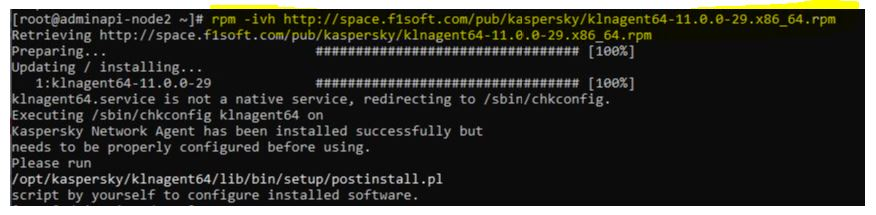
As it suggest you to run postinstall.pl and specify Kaspersky server 10.13.212.50 and other information as bellow:-
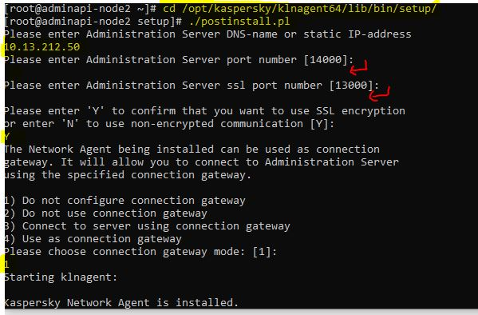
rpm -ivh http://space.f1soft.com/pub/kaspersky/kesl-10.1.1-6421.x86_64.rpm
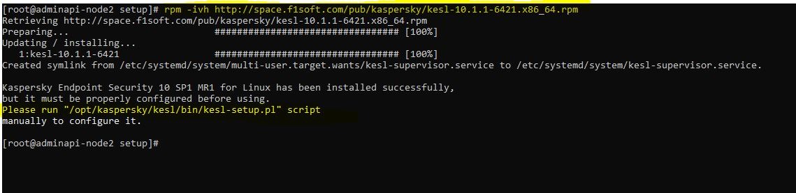
Again, as it suggests, run kesl-setup.pl script and fill the information as below:-
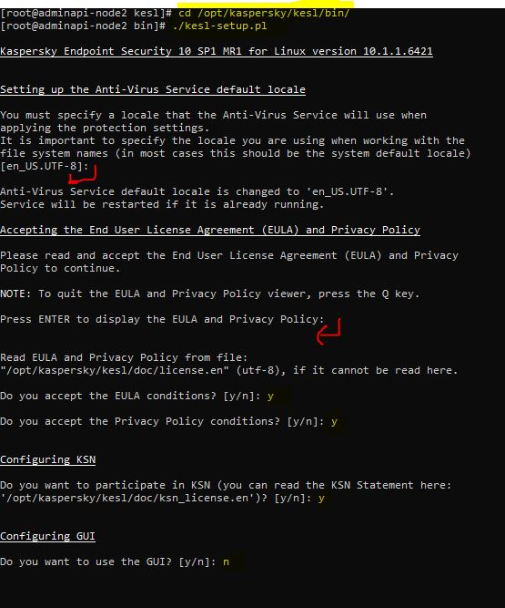 With this KES and Netagent is installed and running:- Check the status:-
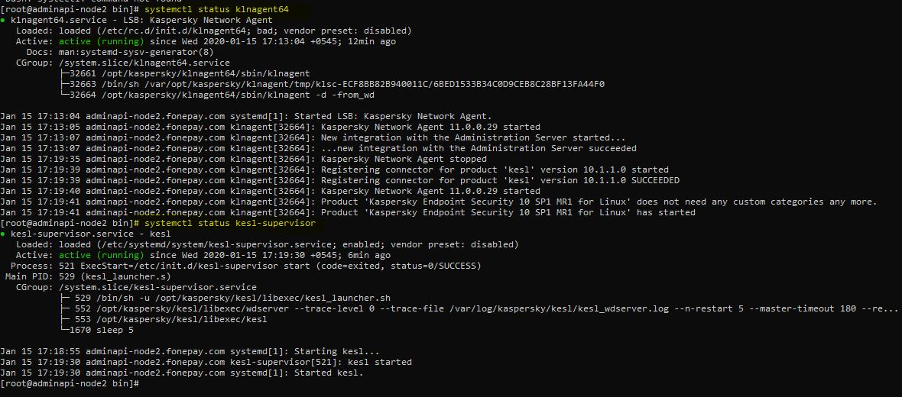
Systemctl enable klnagent64
Systemctl enable kesl-supervisor
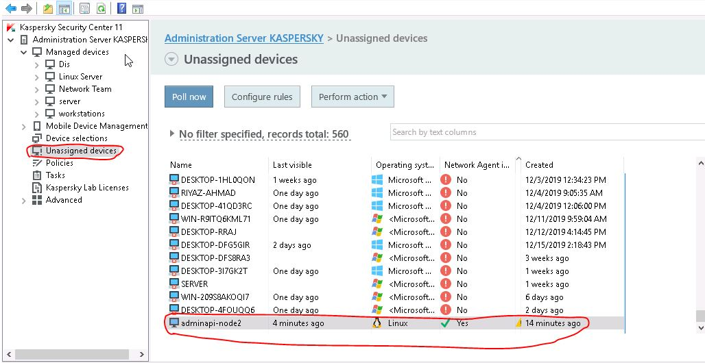 Now, move it to the particular group to apply the key:-
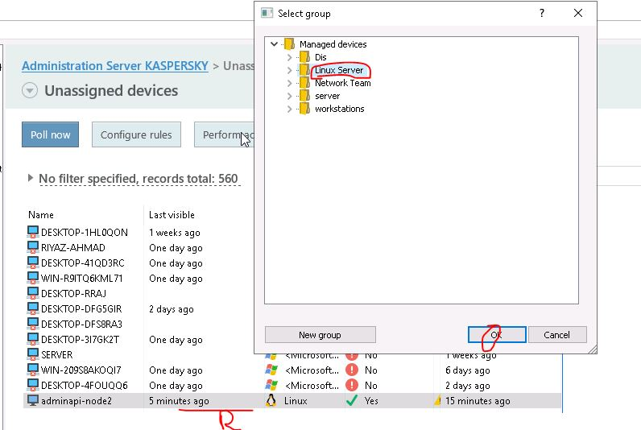
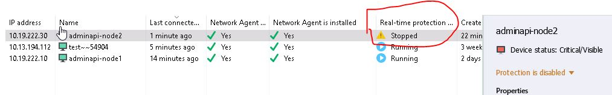 To make it effective Right click on the device > All task > Force Synchronization.
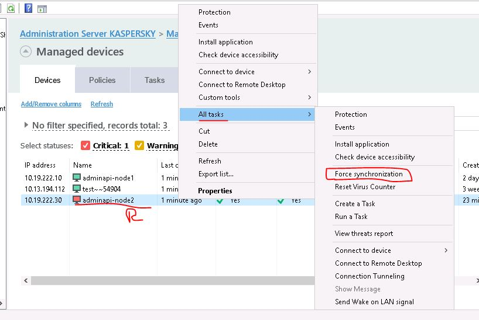
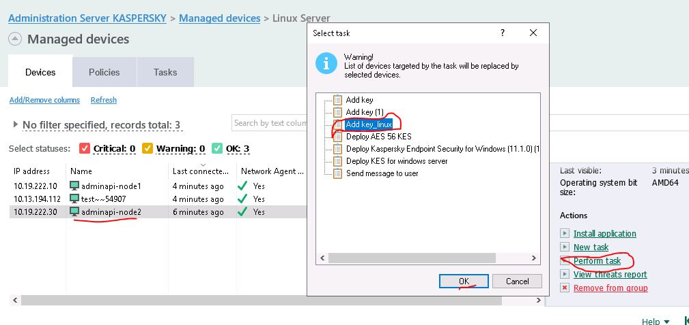
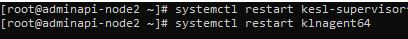
Finally the device status should be like : -
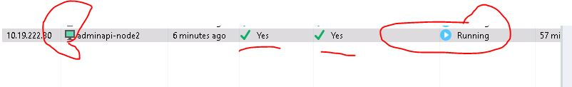
Prepared by: Pratik Gautam